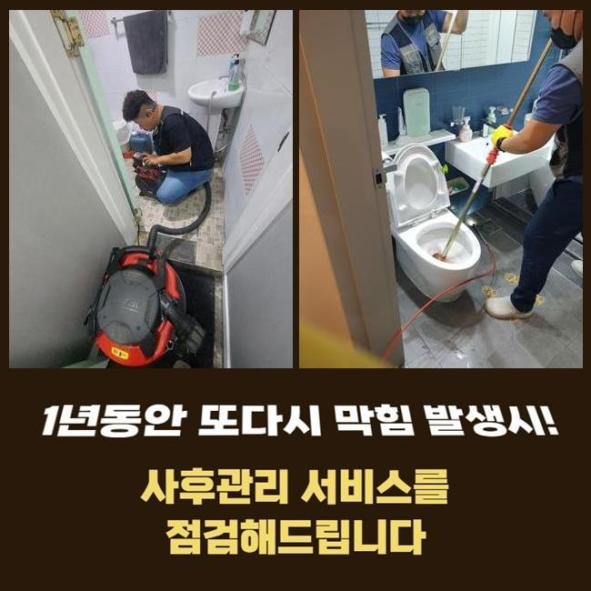
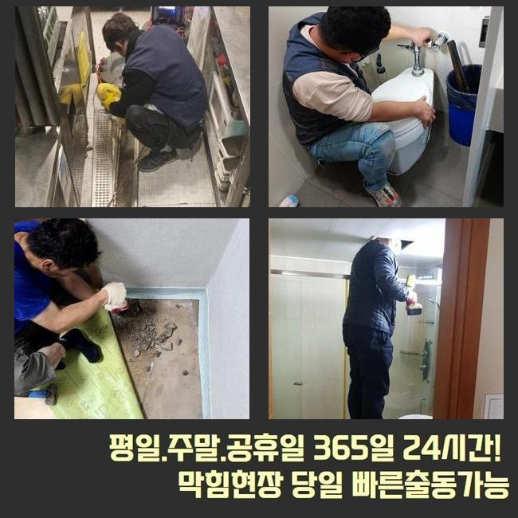
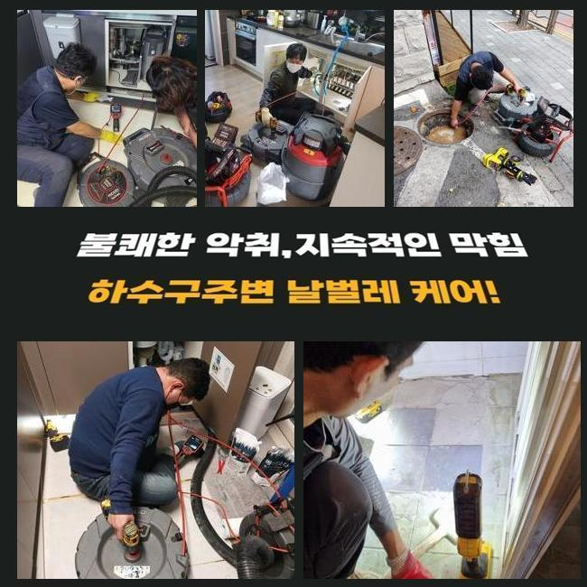
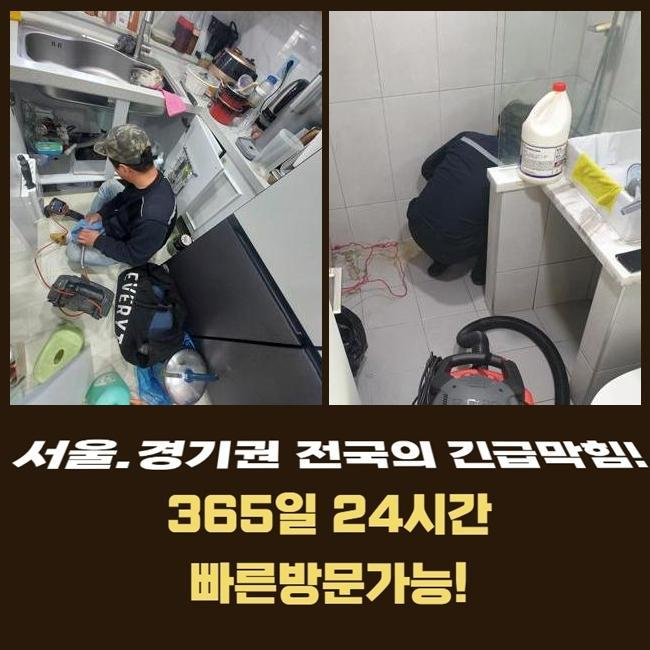
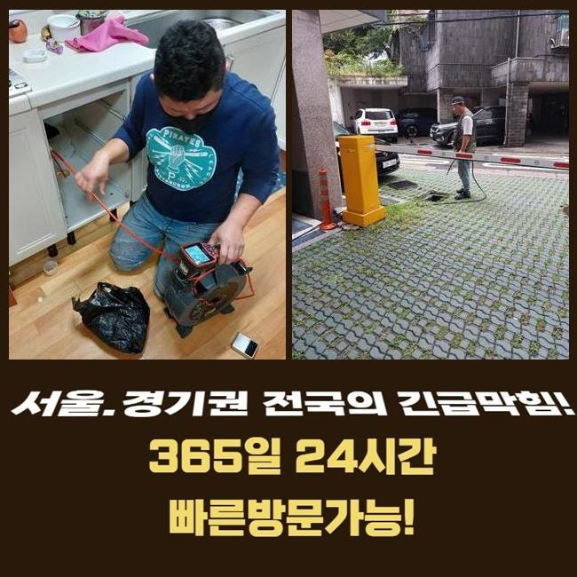
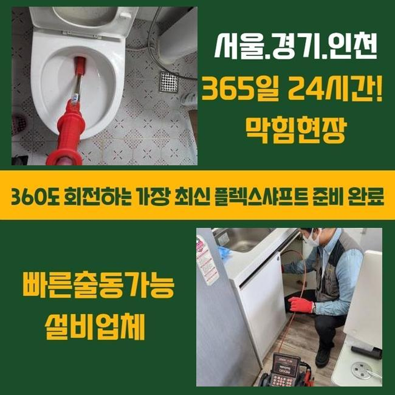

🏠 파주 문발동오수관막힘 금릉동 맨홀막힘 부속수리
파주 문발동 싱크대막힘 전문 시공 후기

📋 작업 개요
- 위치: 파주 문발동, 문발동, 파주
- 서비스 유형: 싱크대막힘, 하수구막힘, 배관막힘, 맨홀막힘, 뚫는업체, 배관청소, 고압세척, 악취차단
- 작업 일시: 2025. 6. 1. 17:35
- 업체명: 하수구수사대 (010-5615-2118)
🔍 문제 상황
파주 문발동오수관막힘 금릉동 맨홀막힘 부속수리
하수구가 마비되면 액상세제를 붓는 등 여러가지 제품을 써서 스스로 해보시려는 분이 많을텐데요
어설프게 도구를 들이 밀고 보자는 생각을 품을 수 있어요
그러나 겉만 뚫어서는 딱딱하지 않은 오염물질을 없애는 데에는 유용할 수 있겠지만요
막힌 요인이 배관의 내부 깊숙이 쌓인 오염물질로 인해 중단이 된 거라면 물꼬를 틀기 힘들어요
스스로 할 수 있는데까지 관통시켜보고 그럼에도 안되면 얼른 전문업체에 와달라고 연락해야 합니다
만일 생활하수를 잠깐동안이나마 이용하지 못한다면 여러 문제를 일으킵니다
식후 설거지를 못해서 상당한 냄새도 널리 전파되고 해충과의 전쟁까지 형성할 수 있어서 할 일이 많아집니다
이번엔 주택이 아니라 건물의 한 오피스에서 싱크대 물이 안빠진다고 도와달란 연락을 받고 내방드린 곳입니다
회사 내 싱크대의 경우 컵을 씻으면서 생기는 기름찌꺼기들로 형성된다는 것을 미리 말씀을 드렸습니다
정확히 왜 막혔는지는 저희가 직접 장소에 방문해서 진단을 해야 알아낼 수 있으므로 편하실 시간대에 방문하여 무엇이 잘못된 것인지 체크하기로 했습니다

🔎 원인 분석
💡 전문가 진단: 정밀 진단 장비를 사용하여 슬러지의 고착 여부를 판명하고 타격/세척 작업을 실시했습니다.
준비물을 모두 준비하고 막힌 곳으로 가서 싱크대 하부에 있는 하부장을 열고 세로로 연결된 주름진 파이프를 우선 없애줬어요
물이 빠지도록 하려면 첫째로 어떠한 특성의 찌꺼기들이 속에서 흐름을 저해하는 중인지 체크하는 게 필요해요
어떤 상황인지 살피고 효과가 좋을 도구로 이런저런 뚫는 활동들을 걸어주는 것이 핵심입니다
시공의 첫번 째로는 작업 구역과 면적을 살펴보려는 목적으로 관찰용 카메라를 넣어주는 과정입니다
거의 찰랑찰랑댈 정도로 물이 차올라있는 모습이라 그냥 진입하면 겉으로 하수가 투출될 수 있으니 석션장치를 가용해서 아슬아슬한 물을 모두 끌어올려 없앴어요
개수대의 막힘을 가볍게 뚫어버리려고 뚫는 작업을 수행해보셨는데 물이 빠지게 하려고 들쑤셔봤지만 안타깝게도 움직임이 없었다고 해요
하수구 카메라로 파이프 속을 보니 곰팡이까지 심각하게 덕지덕지 붙어있었고 가득 뭉쳐진 기름물질이 큼직하게 끼어있었어요
뭉친 양이 상당했고 마치 석회처럼 굳어서 석션기만 가지고는 소거가 쉽지 않았습니다
흡수력에만 의존해서는 역부족일 거라 예상되어 샤프트 장치를 동작시켜서 주방배관 전체를 정돈해나가는 작업을 시작해 보기로 했습니다
샤프트기기를 돌아가는 모터에 연결해주면 끝 부분의 사슬같은 노커가 벽면에 붙어있는 유분을 잘게 잘게 쪼개줍니다
샤프트로 말할 것 같으면 거의 모든 직경의 배수로에 적용되는데 이유는 세밀한 크기의 몸체를 포함하고 있어서 배관 자극없이 무난하게 작업을 이행할 수 있게 됩니다

🔧 작업 과정
강하게 결착이 된 대상을 파괴하는 것이 가능하고 찌꺼기를 갈고리같은 헤드로 빼내주기도 합니다
이번 싱크대 배관도 샤프트기 작동을 중심으로 서서히 막힌 곳을 풀어나갔습니다
근처에서 보시던 고객분이 고압 세척수로는 시공을 해도 되는거냐고 궁금증을 표현하셨습니다
요리를 하는 음식점 등 기름때가 대량으로 유입되는 때에는 고압 세척을 돌려서 정화하기도 합니다
이물질이 많으면 강한 기기를 추가해야 하지만 그렇게 심하지 않다면 오직 플렉스 샤프트 등의 도구로도 효과적으로 차단된 대상을 없앨 수 있어요
활용도가 높은 게 샤프트의 이점 중의 한 가지 입니다
샤프트만 쓰면 되므로 소요시간 까지도 줄어들게 됩니다
특히 기름슬러지들이 말라붙은 곳들을 제대로 치워주기 위해 너무 세지 않은 수준으로 동력을 조율해서 배관 정화 작업을 점진적으로 진행했습니다
너무 빠른 속도로 맞춰서 작업을 이어간다면 배관 벽체에 손상이 되어 문제가 커지니 안전을 최우선 하여 시공을 해드리게 돼요
유막이 두툼하게 누적됐다면 여러차례 거듭 청소하는 것이 필요할 수 있어요
청소가 되어가는 측면을 수시로 확인하며 잔량이 없도록 작업해야만 싱크대 배관이 말끔해집니다
오늘의 관로 청소도 끝마무리 과정에 도달했으며 정화작업이 우수한지 더 신중히 살펴보려 끝으로 다시 배관 카메라를 넣어봤어요
이곳저곳에 쌓였던 슬러지가 모두 없어졌나 정화를 했던 배관을 재조사 해보면서 더 치워줄 곳이 없는지를 최종검사해요
재작업까지 끝내고 카메라 장비를 통해서 내부를 확인했는데 주방 배관 속이 청결하게 바뀐 결과를 이룩하게 됐습니다
최종 체크까지 했으니 떼내었던 배수구 마개를 제자리에 두고 통수 검사를 해봤는데요
이 테스트의 경우에는 관로에 차단되는 부분 없이 싱크대 물이 내려가는지 확인하는 검사에요
문제 없이 작업했기에 배수로가 문제없이 가동되는 게 보였습니다
싱크볼 내부에서도 통쾌하게 흘러나갔고 바깥으로 물이 빠져나오는 현상이나 느릿느릿해지는 모습도 보이지 않았어요


✅ 작업 완료
이제는 싱크대 수돗물을 많이 사용한다고 해도 굉장히 곤란했었던 냄새 없는 환경에서 기분 좋게 쓰실 수 있을 거예요
종료 직전에 작업 결과물을 확인해보니 방출된 노폐물이 굉장하리만큼 다량이 빠져나왔더라고요
많은 사람이 오가는 사무실은 경미한 문제더라도 배수가 되지 않는다면 초기에 바로잡는 것이 절실한 문제입니다
막히지 않으면 좋겠지만 막힘이 도래했을 때 제때 청소를 받으시는 게 들어가야 한다는 사실도 설명하고 싶습니다
불현듯 잘 써오던 싱크대가 막혀버리는 경우가 발생하면 전문업체의 작업을 통하여 개선해 보시기 바랍니다



⚠️ 주방 싱크대 배관 막힘 예방 수칙
- ✅ 기름기가 묻은 식기나 프라이팬은 설거지 전 키친타올로 반드시 기름때를 닦아내세요.
- ✅ 주기적으로 싱크대 개수대에 뜨거운 물을 가득 받아 한 번에 내려 배관 내부 기름을 씻어내세요.
- ✅ 배수구 거름망을 미세한 필터로 사용하시고 음식물 찌꺼기가 틈으로 새어 들지 않게 관리하세요.
- ✅ 베이킹소다와 식초를 뜨거운 물과 함께 일주일에 한 번씩 부어주면 배관 살균과 막힘 예방에 좋습니다.
💡 핵심 정리
- 확실한 장비 작업(내시경 점검 및 샤프트 스케일링)으로 원인을 뿌리 뽑습니다.
- 작업 후 1년 이내에 동일한 부위 재발 시 100% 무상 A/S 서비스를 보장합니다.
- 서울 · 경기 · 인천 전 지역에 24시간 언제든 긴급 출동할 수 있도록 항시 대기 중입니다.
❓ 자주 묻는 질문 (FAQ)
🚨 파주 문발동 싱크대막힘 문제로 고민이신가요?
정확한 원인 진단과 확실한 시공으로 재발 없는 해결을 약속드립니다.
24시간 긴급 출동 | 서울 · 경기 · 인천 전지역 | 1년 내 재발 시 무상 A/S